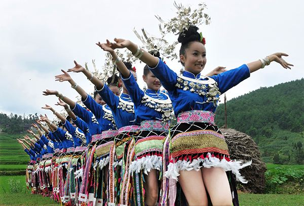

注册 |
登录/服务入口
中国（Country）
美国
英国
其他
首页
旅游动态
关于我们
旅游与服务
最新消息
技术支持
Submit
蜡染
丹寨苗族蜡染的制作者们喜欢以自然纹为主的大花，自然纹以自然界中的花鸟鱼虫做素材，随心所欲地创作成别致的图案，造型生动，活泼流畅，富于夸张性。其中鸟的变化最为丰富，想象异常大胆，简练传神，乡土气浓，富有童话般的梦幻色彩。
古法造纸
贵州石桥造出来的这种纸叫做白皮纸，迄今仍旧沿用最古老的造纸之术，专门提供给国家古籍、文物修复之用。听说，这里的纸真的能做到“寿纸千年”，一张石桥纸，保存得当，一千五百年也不会腐烂，也就是说这个技术再流传一千年，最早的那纸还没烂也未可知。

锦鸡舞
锦鸡舞是苗族芦笙舞中别具一格的一种民间传统舞蹈，发源于贵州省黔东南丹寨县排调镇境内，主要流传于苗族"旮弄"支系中穿锦鸡服饰的锦鸡苗族，锦鸡舞，有“天下第一锦鸡舞”之称。苗族同胞在每年的盛大节日里举行隆重的吹笙跳月活动，敲击铜鼓，欢跳锦鸡舞，放牯子牛斗角，以纪念先祖和感恩锦鸡。
卡拉鸟笼
卡拉鸟笼”是贵州省丹寨县卡拉村制作而得名，卡拉村是少数民族苗族村落，在苗语里卡拉是好的意思；卡拉苗寨是现存为数不多的古老传统手工编织鸟笼专业村寨，其编制的鸟笼远销国内外，编制技艺已有四百多年的历史。2007年，卡拉村被贵州省文化厅命名“鸟笼编织艺术之乡”。
联系我们 | 网站地图 | 友情链接 | 法律申明 | 订阅管理 | 意见与建议 |